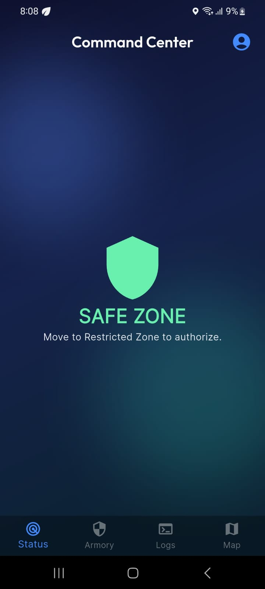
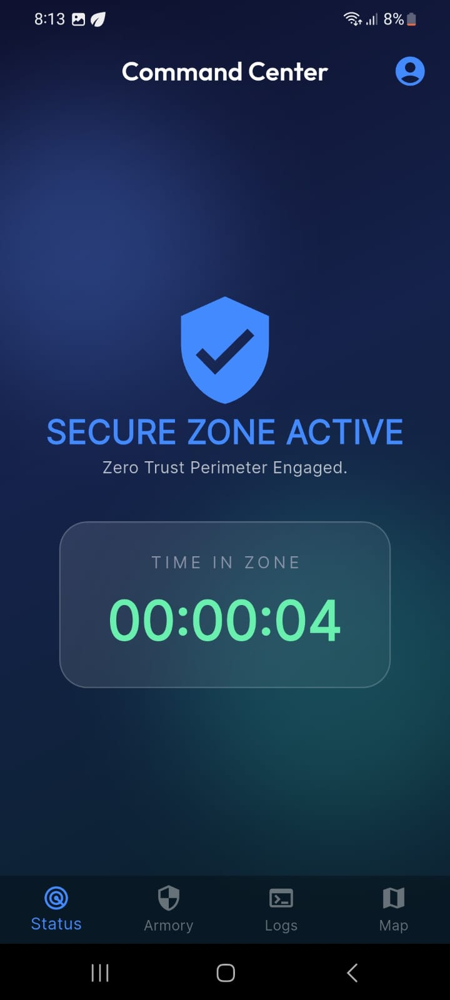
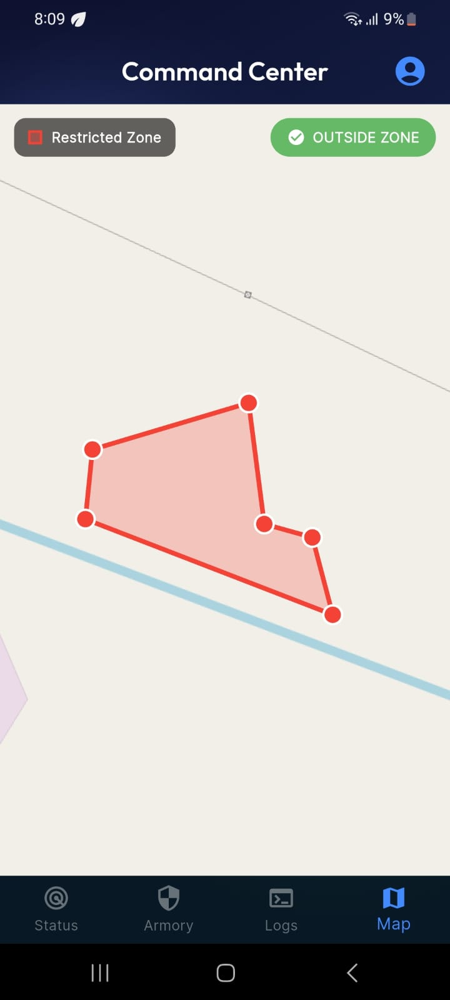
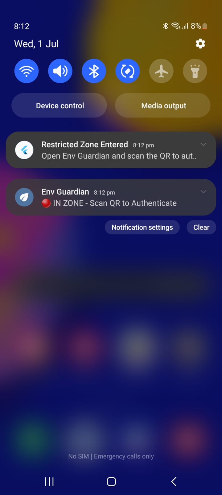
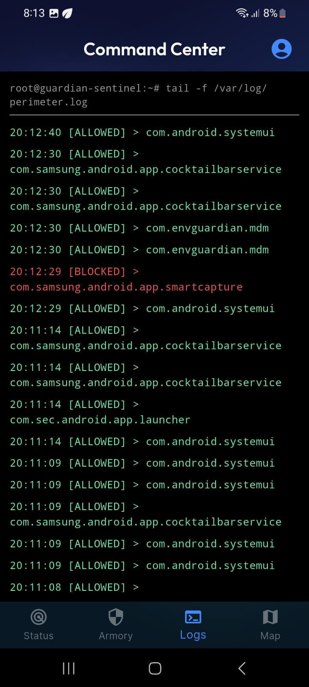
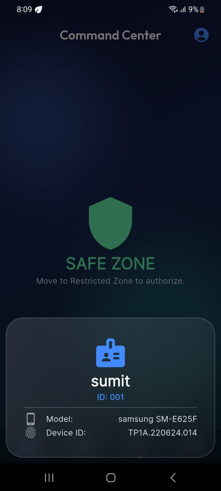
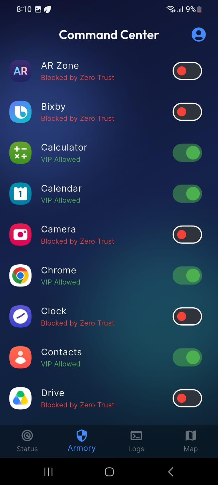
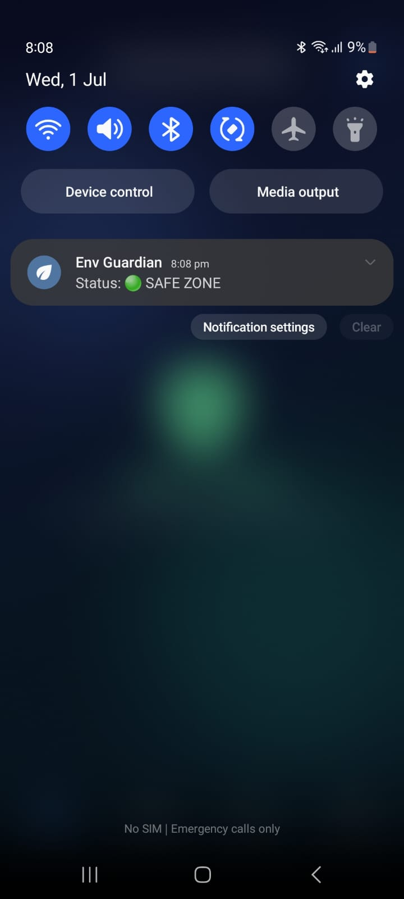

Step into a restricted zone and unapproved apps are blocked, their internet is cut and presence is verified. Walk out, and the phone is instantly personal again. No wipe. No enrollment.


Our mission is simple: secure every restricted space — without owning anyone's personal phone. Inside the zone, Env Guardian enforces zero-trust policy: approved apps only, verified presence, no data leaks. Step outside, and your phone is fully yours again.
Employees carry personal phones into labs, exam halls, data centres and secure floors — with cameras, cloud uploads and endless distractions. Traditional MDM means enrolling or factory-resetting the device, which nobody accepts for a personal phone. So the risk goes unmanaged.
Cross the geofence and the device flips state in seconds — automatically, both ways.
Eight enforcement layers, enforced natively on-device — they keep working even with the app closed.
Draw any restricted area as a polygon on the map. Enforcement arms itself only inside it and disarms the moment a device steps out — the boundary itself is the on/off switch.

Non-whitelisted apps are pushed off-screen instantly by an on-device accessibility enforcer.
A local, no-root VPN cuts internet to unapproved apps in-zone and switches off the moment you leave.
Confirm a person is physically present with a static or rotating (TOTP) zone QR code.
Allow an app, but only for X minutes a day — measured from real usage and enforced on-device.
Real-time location, permission and tamper telemetry, a compliance score and one-tap remote lock.
A device is bound to its first owner — a lost or stolen phone can't be re-registered by someone else.
Runs on personal phones using only user-granted permissions — no reset, no full-device enrollment.
Every app works, full internet, zero monitoring. Env Guardian sleeps in the background.
Env Guardian steps forward and asks for the zone QR — proof you're physically here.
Only whitelisted apps run, unapproved apps lose internet, and a live timer tracks time-in-zone.
Allow/block events stream to the server in real time — a full compliance ledger per device.


A clear status screen, a live in-zone timer, an app-block ledger and a zone map — so employees always know exactly what's controlled.



Stop data exfiltration and shadow-IT apps on secure floors and in server rooms.
Enforce a no-distraction, no-cheating perimeter across exam halls and labs.
Block cameras and uploads around prototypes and production lines.
See Env Guardian enforce a live zone in minutes — on a real personal phone.